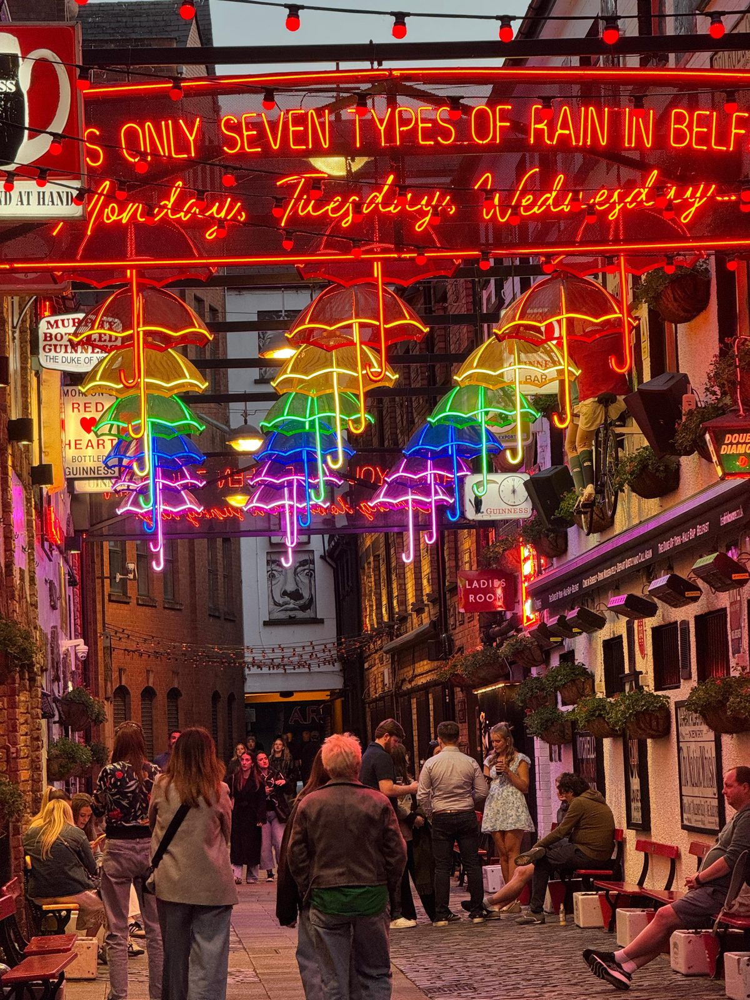
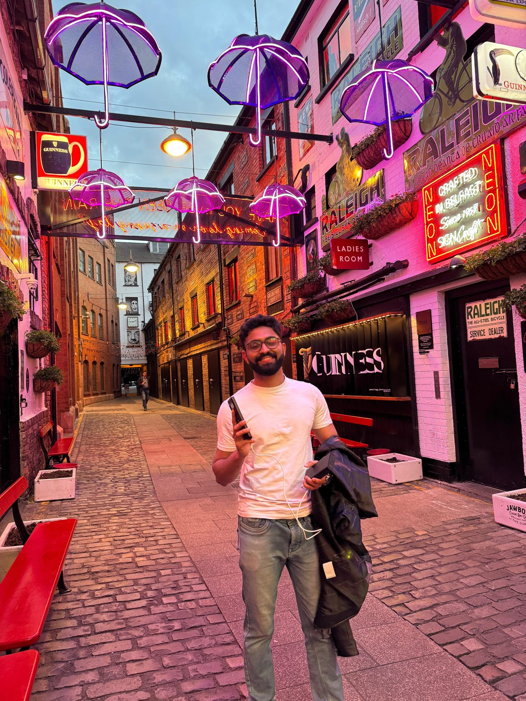
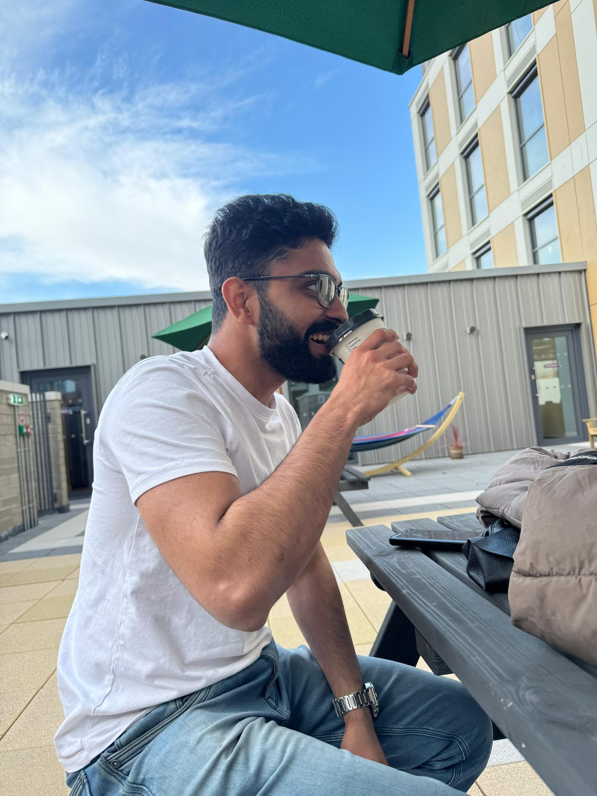
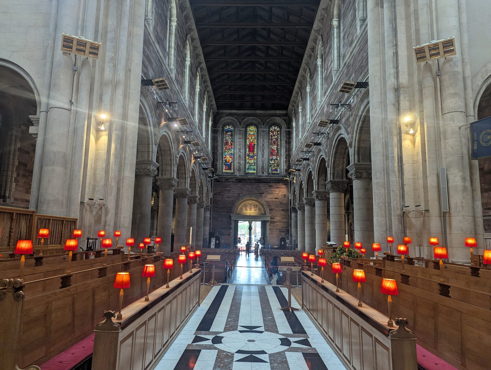
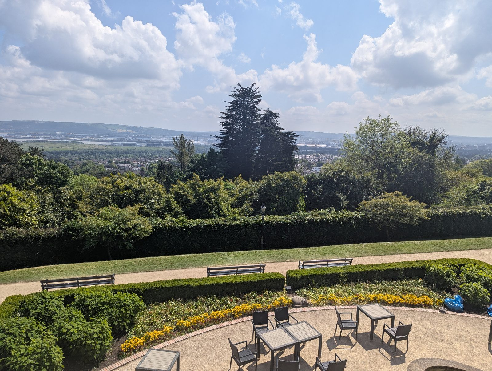

Belfast city centre
It all started with the homies meeting up in Belfast city centre.

Lunch together
Then we sat down and had lunch together.
The Titanic museum
Next up was the Titanic museum.
Visiting Queen's
After that, we visited Queen's.
Belfast Castle
From there we went up to Belfast Castle.
Cave Hill
And then we did a hike in Cave Hill.
Back to Dublin
And after that, I returned to Dublin.




